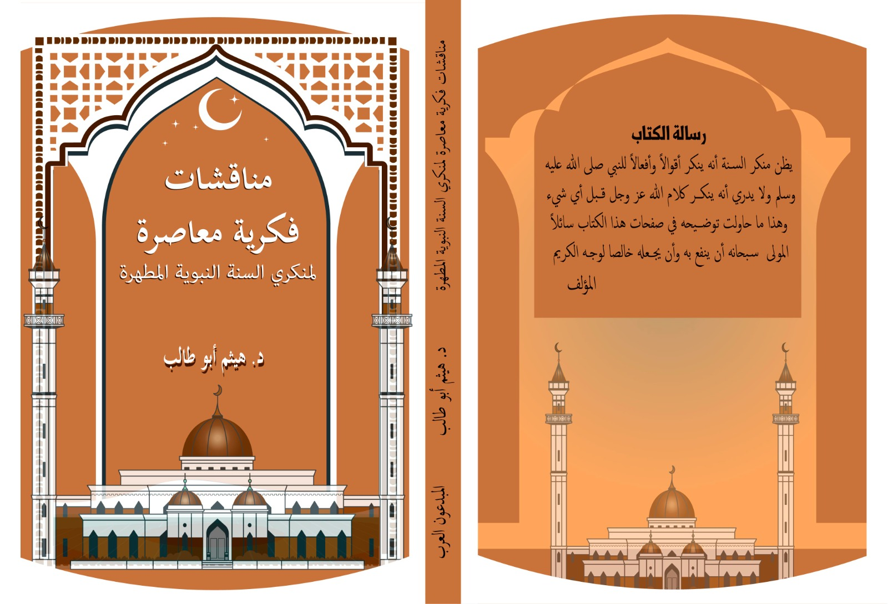

﷽
✦ مناقشات فكرية معاصرة ✦بالحجج العلمية والدلائل الشرعية المستقاة من القرآن الكريم والسنة النبوية وكلام أهل العلم
مقالات مستخلصة من كتب د. هيثم أبو طالب — مرتبة حسب الكتاب والفصل
هل لديك سؤال حول هذا المقال؟ اسأل المساعد الذكي

يظن منكر السنة أنه ينكر أقوالاً وأفعالاً للنبي ﷺ، ولا يدري أنه ينكر كلام الله عز وجل. يناقش الكتاب أبرز الشبهات حول حجية السنة النبوية بالحجج العلمية والأدلة القرآنية، ويرد على دعاوى الاكتفاء بالقرآن وحده ونقد الأحاديث والادعاءات بتعارضها مع القرآن الكريم.
رد علمي رصين على دعوى أن القرآن هو المصدر الوحيد للتشريع، وعلى شبهات التفريق بين مقام النبوة ومقام الرسالة. يناقش الكتاب ثلاثة وعشرين مبحثاً في فصلين رئيسيين بالدليل القرآني الصريح والمنطق العلمي.
الكتاب الثالث — رد على كتاب محمد شحرور "الكتاب والقرآن". قيد الإعداد وسيُضاف قريباً بإذن الله.
⏳ قريباً بإذن اللهاسأل عن حجية السنة — ونقد الأحاديث — والرد على منكري السنة — والمذاهب الفقهية
أدخل مفتاحك من openrouter.ai — مجاني تماماً — يُحفظ في متصفحك فقط ولا يُرسل لأي خادم.
يستخدم OpenRouter — مجاني — لا تُحفظ أي محادثة على خوادمنا — مراجع: dorar.net | islamweb.net | sunnah.com | islamqa.info
موقع سنة شات مخصص للرد على شبهات منكري السنة النبوية المطهرة، من خلال تقديم الحجج العلمية والأدلة الشرعية المستقاة من القرآن الكريم والسنة النبوية وكلام أهل العلم.
يضم الموقع فيديوهات تعليمية تتناول أبرز الشبهات المثارة حول حجية السنة النبوية، ونقد الأحاديث، والمذاهب الفقهية، إضافة إلى مكتبة تضم كتب المؤلف ومساعد ذكي للبحث والحوار العلمي.
الموقع مفتوح المصدر على GitHub، مستضاف مجاناً، ومصمم ليبقى يعمل بإذن الله بعد رحيل صاحبه — صدقة جارية.
طبيب أسنان حاصل على الزمالة المصرية والزمالة من كلية الجراحين الملكية بآيرلندا (FDSRCSI). تلقى التحصيل الشرعي المنهجي في عدة محاضن علمية أبرزها: أكاديمية صناعة المحاور، البناء المنهجي، برنامج مذكّر، التأهيل الفقهي، ودراسة الفقه الحنبلي في معهد الإمام البهوتي. يركز مشروعه البحثي على معالجة الإشكالات الفكرية المعاصرة المتعلقة بالسنة النبوية بأسلوب علمي منهجي.
▶ القناة على يوتيوب